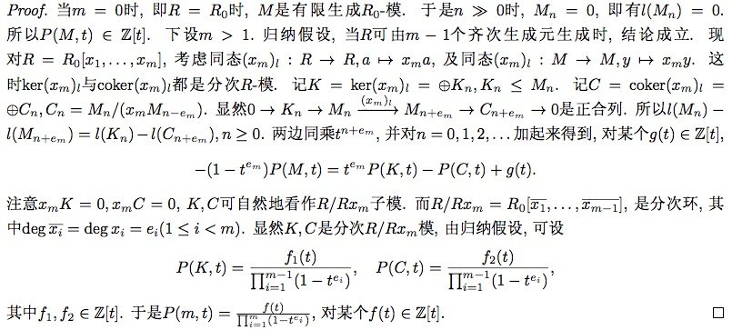

在学习非交换环论的过程中, 发现交换环有些东西依然没搞清楚, 复习一下, 顺便再理一理 Matsumura 这本言简意赅的《Commutative Algebra》. 以下环都是指含幺交换环(commutative ring with identity)
基本概念
可以说书中没一句废话, 开头直接给出下面概念, 并且叙述一些常见等价刻画:
- 理想的 radical 的定义
- prime ideal 的(等价)定义
- primary ideal 的定义, 说明 primary ideal 的 radical 是 prime ideal (反之不尽然), 并给出一个理想成为 primary ideal 的充分条件: 包含某个极大理想的某次幂.
- 定义了环$A$上的 Zariski 拓扑(素谱) $Spec(A)$, 极大谱 $\Omega(A)$, 包含某个集合的素理想全体构成闭集(容易验证确实构成拓扑空间), 给出素谱的基本开邻域基. 由于每个理想都包含在某个极大理想中, 极大理想都是素的, 因此 $Spec(A) = \emptyset \Leftrightarrow A = 0$, 也就是说 $Spec$ 的定义是没有毛病的. $Spec(A)$连通当且仅当$A$ 中无非平凡幂等元.
$$V(I) = V(J) \Longleftrightarrow \sqrt{I} = \sqrt{J}$$ - 说明环之间的同态映射 $f: A \to B$ 可以诱导 $Spec(B) \to Spec(A)$ 之间的连续映射, 也就是说 $Spec$ 定义了一个环范畴到拓扑空间范畴的一个逆变函子.
- 给出了一个关于素理想并的常见引理: 一个理想包含在最多两个不是素理想的理想的并中, 则它必然包含在其中一个理想中. 当然这也说明了任意两个真理想的并不会是整个环.
- 给出了两个理想互素的定义(和为整个环), 并说明此时它们的积等于交. 证明用到$(I+J)(I \cap J) \subset IJ$.
- 定义乘闭子集$S$准备做局部化, 应用zorn引理说明与$S$不相交的理想中任意极大元都是素理想, 由此可以证明: $A$中幂零元全体$nil(A)$是$A$中所有素理想的交, 也等于$A$中所有极小素理想的交. 再由此结论, 可以说明每个理想$I$的radical: $\sqrt{I}$ 是所有包含$I$的素理想的交.
- 定义环$A$在$S$处的局部化$S^{-1}A$. $S^{-1}A = 0 \Leftrightarrow 0 \in S$. 并且我们有自然映射 $\phi : A \to S^{-1}A, \quad a \mapsto a/1$, 它满足泛性质: 若$f: A \to B$ 是环同态, 且$f(S)$均为$B$中可逆元, 那么有$g: S^{-1}A \to B$ 使得 $f = g \phi$
- $A$中与$S$不交的理想(素, 准素)和$S^{-1}A$中的理想(素, 准素)有保序一一对应.
- 类似于环, 可以对模$M$作局部化$S^{-1}M \simeq S^{-1}A \otimes M$, 这个同构可以由两个自然的合理的互逆映射给出. 并且我们还有同构 $S^{-1}(M \otimes N) = S^{-1} M \otimes S^{-1}N$. 由于张量函子右正合, 用定义可以证明 $S^{-1}A \otimes -$ 是正合函子. 也就是说 $S^{-1}A$ 是平坦$A$-模.
- 给出有限表示(finite presentation)的定义: 即一个有限生成模, 且其生成关系也是有限生成的. 等价于说有正合列:$ A^m \to A^n \to M \to 0$ 此时我们有:
$$S^{-1}(\hom(M,N)) \simeq \hom(S^{-1}M, S^{-1}N)$$
证明的关键在于对于自由模$M=A^n$时有上述自然同构, 再由有限表示, 应用 five lemma 证明上式. - 局部整体关系 $M \to \prod_{\max p} M_{p}$ 是单的. 其中 $M_{p} = (A - p)^{-1} M$. 证明应用定义说明$Ann(x) = A$ 即可.
- 整环的特殊情形 当$A$为整环时, $A$在任意乘闭子集处的局部化都可以看做它的分式域的子环, 实际上我们有
$$ A = \bigcap_{\max p} A_{p}$$
证明类似整数作有理数. 定义$D = \lbrace a \in A | ax \in A \rbrace$ 说明若$x \notin A$ 可知 $D \subset A$(真包含), 因此$D$在某个极大理想$P$中, 可推出 $x \notin A_{P}$. - 我们有自然的同构 $A/I \otimes M \simeq M/IM$, 同构可由正合列 $0 \to I \to A \to A/I \to 0$, 用$- \otimes M$ 作用上去, 再由定义有 $I \otimes M \to IM$ 的自然满同态($M$平坦时可以说明是同构), 得到正合列: $0 \to IM \to M \to A/I \otimes M \to 0$
特别地, 我们有: $S^{-1}(A/I) = S^{-1}A / I(S^{-1}A)$ - Jacobson radical: $rad(A) = \lbrace x| 1+xy \in U(A) \rbrace$为所有极大理想的交.
- 局部环: 若环$A$只有一个极大素理想$\mathfrak{m}$, 则称 $A$ 为局部环, $A/\mathfrak{m}$称为$A$的residue field.
局部环之所以重要是因为, 任意环$A$在素理想$p$处作局部化都是一个局部环$A_p$. 此时$A_p$的residue field记作 $k(p)$. 它恰好是整环$A/p$的分式域$K(A/p)$. 由 $A \to A/p$ 到 $A_p \to K(A/p)$ 因此, 我们有 $k(p) \simeq K(A/p)$ - 局部映射: 若环 $(A, \mathfrak{m}, k)$和 $(A’, \mathfrak{m}’, k’)$ 为局部环, 且有环同态 $\phi: A \to A’$ 使得 $\phi(\mathfrak{m}) \subseteq \mathfrak{m}’$, 则称为局部映射, 此时$\phi$自然诱导了环同态$k \to k’$.
现在对任意环同态 $\phi: A \to B$, 考虑连续映射
$$\hat{\phi}: Spec(B) \to Spec(A), \quad P \to \phi^{-1}(P) = P \cap A = p$$
此时 $\phi(A-p) \subseteq B-P$, 即$\phi$诱导了局部映射$\phi_P: A_p \to B_P$. - 半局部环 若环$A$只有有限个极大理想$\mathfrak{m}_1, \mathfrak{m}_2, \cdots , \mathfrak{m}_r$, 则称 $A$ 为半局部环(semilocal ring).
由于不同极大理想必然互素, 因此
$$rad(A) = \mathfrak{m}_1 \cap \cdots \cap \mathfrak{m}_r = \prod \mathfrak{m}_i$$ NAK lemma 设$I$是环$A$的理想, $M$是有限生成(f.g.)$A$-模. 若 $IM = M$, 则存在$t \in I$ 使得 $(1+t)M = 0$, 特别地, 若还有 $I \subseteq rad(A)$, 则 $M=0$.
Proof: 设$M=Am_1 + \cdots + Am_s$, 对 $s$ 数学归纳, $s=0$ 时, 结论显然, 设$M’ = M / Am_s$, 则由归纳假设, $\exists x \in I$ 使得 $(1+x)M’=0$, 即 $(1+x)M \subseteq Aw_s$, 由于 $M = IM$, 我们有 $(1+x)M = I(1+x)M \subseteq I(Aw_s) = Iw_s$, 因此存在$y \in I$使得$(1+x)w_s = yw_s$. 所以
$(1+x-y)(1+x)M = 0$, $t = x-y+x+(x-y)x$ 即为所求.
NAK lemma 常用如下应用形式: $I$为环$A$的理想, $N \subset M$ 为$A$-模, 若 $M = N + IM$, 且$I$幂零或$M$有限生成, 则$M=N$.不要以为有限生成, 理想幂零, 环是整环或者reduced条件很苛刻, 其实实际碰到的也都是这些环, 主要问题在于有没有丰富的结果, 这些条件在何时发挥着作用. 有限生成可以用数学归纳, 幂零理想可以用于幂次和根理想.
给定局部环 $(A, \mathfrak{m},k)$ , $M$是$A$-模, 若$\mathfrak{m}$ 幂零(例如$A$是Artinian)或者$M$有限生成, 则$M$的子集$G$生成$M$, 当且仅当它在$M/\mathfrak{m}M = M \otimes k$下像 $\bar{G}$ 生成 $M \otimes k$.
由于$M \otimes k$是域$k$上的向量空间, 因此它的一组基提升之后就能生成 $M$, 但是一般地并不能保证这些生成元线性无关.
$M$-regular: $a \in A$ 称为 $M$-regular, 若 $0 \to M \xrightarrow{a} M$, 显然, $M$-regular元全体构成了一个乘闭子集. 设$S_0$为$A$-regular元全体, 则 $S_0^{-1}A$称为$A$的total quotient ring. 此时 $\phi: A \to S_0^{-1} A$ 是环单同态.
若$M$是Noetherian环$A$上有限生成模,那么我们有投射表示:
$$ \cdots \to X_i \to X_{i+1} \to \cdots X_0 \to M \to 0$$
其中 $X_i$为有限自由$A$-模, 特别地, 此时 $M$是有限表示(finite presentation). 此时多项式环$A[x_1, \cdots, x_n]$也是Noetherian, 类似的形式幂级数环$A[[x_1, \cdots, x_n]]$也是Noetherian, $A$ 上的有限维代数也是Noetherian.任意环中, 理想链的长度不低于极大理想的个数.
环$A$是Artinian, 当且仅当它作为$A$-模是有限长的, 当且仅当它是Noetherian, 并且它的素理想都是极大的.
- 设$\mathfrak{a}$是环$A$的理想, $b \in A$, 若$\mathfrak{a} + bA$和$\mathfrak{a}:bA$都有限生成, 则$\mathfrak{a}$有限生成.
Proof: 设$a_i \in \mathfrak{a},\quad b_j \in A$使得$\mathfrak{a} + bA = \sum a_iA + bA$且$\mathfrak{a} : bA = \sum c_j A$. 设$\mathfrak{a}’ = \sum a_iA + \sum bc_j A \subseteq \mathfrak{a}$. 对任意 $a \in \mathfrak{a}$, 我们有 $a \in \mathfrak{a}’ + bA$, 即$a \equiv rb \mod \mathfrak{a}’$. 因此 $rb \in \mathfrak{a}$. 即 $r \in \mathfrak{a}: bA$, $rb \in \mathfrak{a}’$, 因此$a \in \mathfrak{a}’$, 即$\mathfrak{a} = \mathfrak{a}’$. - (Cohen)环$A$是Noetherian, 当且仅当它的每个素理想都是有限生成的.
Proof: 记$A$中所有非有限生成理想构成的集合为$F$, 取$F$中极大元$\mathfrak{a}$(zorn引理保证可行性), 那么由条件知道$\mathfrak{a}$不是素理想, 因此存在 $a,b \in A$, 使得 $a, b \notin \mathfrak{a}$且$ab \in \mathfrak{a}$. 又因为 $\mathfrak{a}$的极大性知: $\mathfrak{a}+bA$和$\mathfrak{a}:bA$有限生成, 所以 $\mathfrak{a}$有限生成, 所以$F = \emptyset$. - 定义$Supp(M) = \lbrace p \in Spec(A) | M_p \neq 0 \rbrace$. 若$M$有限生成, 则 $Supp(M) = V(Ann(M))$.
平坦性(Flatness)
设 $S: \quad \cdots \to N \to N’ \to N’’ \to \cdots$ 是任意$A$-模序列.
称$A$-模$M$是平坦的, 如果$S$正合, 则$S \otimes M$正合.
称$M$忠实平坦的(faithful flat), 如果$S$正合当且仅当$S \otimes M$ 正合.
例子: 投射模是平坦的, 自由模是忠实平坦的.
平坦模的等价刻画
- $M$是平坦的.
- 若$0 \to N \to N’$ exact, 则 $0 \to N \otimes M \to N’ \otimes M$ exact.
- 对任意(有限生成)理想$I$, $0 \to I \otimes M \to M$ exact. 即 $I \otimes M \simeq IM$.
- $Tor_1 ^A(M,A/I) = 0$ 对任意(有限生成)理想$I$成立.
- $Tor_1 ^A(M,N) = 0$ 对任意(有限生成)模$N$成立.
- 若 $\sum a_i x_i = 0$, 则存在$b_{ij} \in A, y_j \in M$使得$\sum a_i b_{ij} = 0$ 且 $x_i = \sum b_{ij}y_j$.
1 -> 6 -> 3.
平坦模的基本性质
Transitivity: 设$\phi: A \to B$是平坦环同态(即$B$看做$A$-模是平坦的), 那么平坦$B$-模$N$也是平坦$A$模. (直接用定义证明即可)
Change of base: 设$\phi: A \to B$ 是环同态, 若$M$是平坦$A$-模, 则 $M \otimes B$ 是平坦$B$-模.
Localization: $S^{-1}A$ 是平坦 $A$-模. (直接用元素定义可证)
Tor函子和张量函子交换: 设$\phi: A \to B$是平坦同态, $M,N$是$A$-模, 则有 $Tor_i ^A(M,N) \otimes _A B = Tor_i ^B(M \otimes_A B,N \otimes_A B)$.
当$A$ Noetherian且$M$有限生成, 则$Ext_i ^A(M,N) \otimes _A B = Ext_i ^B(M \otimes_A B,N \otimes_A B)$
Proof: 给定$M$的一个投射(自由)表示: $\cdots \to X_1 \to X_0 \to M \to 0$. 由于$B_A$平坦, 我们得到$M \otimes_A B$ 的投射表示: $\cdots \to X_1 \otimes_A B \to X_0 \otimes_A B \to M \otimes_A B \to 0$. 因此我们有:
$$ Tor_i ^B(M \otimes_A B,N \otimes_A B) = H_i(X. \otimes_A N \otimes_A B) = H_i(X. \otimes_A N)\otimes_A B = Tor_i ^A(M,N) \otimes _A B $$
当$A$ Noetherian且$M$有限生成时, 我们可以给$M$的一个有限自由表示, 再由$B$平坦得到了, $M \otimes _A B$的有限自由表示:
$\cdots \to X_1 \otimes_A B \to X_0 \otimes_A B \to M \otimes_A B \to 0$ 由此得到复形:
$$ 0 \to \hom_B(M \otimes _A B, N \otimes _A B) \to \hom_B(X_0 \otimes _A B, N \otimes _A B) \to \hom_B(X_1 \otimes _A B, N \otimes _A B) \to \cdots $$
由于 $X_i$ 是有限自由模, 因此 $\hom_B(X_i \otimes B, N \otimes B) = \hom_A(X_i, N) \otimes _A B$. 所以
$$Ext_i ^B(M \otimes_A B,N \otimes_A B) = H_i(\hom_A(X_i, N) \otimes _A B) = H_i(\hom_A(X_i, N)) \otimes _A B = Ext_i ^A(M,N) \otimes _A B$$
特别地, 去 $B = S^{-1}A$.
设$M$是平坦$A$-模, 则$A$-regular元都是$M$-regular元. 这只因为 $0 \to A \xrightarrow{a} A$ 可推出 $0 \to M \xrightarrow{a}M$.
局部环上有限生成模是自由模
$(A,\mathfrak{m},k)$是局部环, $M$是平坦$A$-模, 若$\mathfrak{m}$幂零或$M$有限生成, 则 $M$是自由模.
在基本概念21中, $G$生成了$M$, 如果 $G$ 中元素线性无关, 那么 $G$自然就是$M$的一组基(从而是自由模), 也就是说, 我们只需证明$G =\lbrace x_1 \cdots x_n \rbrace$在 $M/mM = M \otimes k$下的象线性无关, 则由$G$线性无关. 而$\mathfrak{m}$幂零或$M$有限生成这个条件本质上是保证$M/mM \neq 0$(由NAK lemma). 然后对$n$应用数学归纳, 并利用平坦模等价刻画6说明线性无关性. 从而命题得证.
局部环上的投射模都是自由模
平坦模好平坦0.0
设$A \to B$是平坦同态, 设$I,J$是$A$是理想, 则
- $(I \cap J)B = IB \cap JB$
- $(I : J)B = IB : JB$, 其中$J$是有限生成的.
Proof: 由正合列: $0 \to I \cap J \to A \to A/I \otimes A/J$, 张量上$B$得到 $0 \to (I \cap J)B \to B \to B/IB \otimes B/JB$. 因此$(I \cap J)B = IB \cap JB$.
当$J$有限生成时, 只需证明$J = aA$的形式: 由正合列$0 \to (I :aA) \to A \xrightarrow{f} \to A/I$. 其中 $f(x) = ax
\mod I$. 张量上$B$即可得到结论, 对于一般情况应用
$$ (I: \sum_{i=1} ^n a_i A) = \bigcap_{i=1} ^n (I : a_i A)$$
平坦映射讲一个保持理想的交, 一种反映平坦的地方吧.
平坦的局部整体性
设$f: A \to B$是环同态(即$B$是交换结合$A$代数), 那么下面条件等价:
- $B$ 作为$A$-模平坦.
- $B_P$ 作为$A_p$模平坦, 其中$p = P \cap A, \quad P \in Spec(B)$
- $B_P$ 作为$A_p$模平坦, 其中$p = P \cap A, \quad P \in \omega(B)$
Proof: $1 \to 2 \to 3$ 显然, $3 \to 1$, 只需证明 $Tor_1 ^A(B,N)=0$. 由$Tor_1 ^{A_p}(B_P, N_p) = 0, P \in \omega(B)$. 知道结论成立.
忠实平坦(faithful flat f.f.)
一个自然的问题, 平坦模何时成为忠实平坦模呢?
设$M$是$A$-模, 下面条件等价
- $M$是 f.f. $A$-模;
- $M$是平坦$A$-模, 且对任意$A$-模$N \neq 0$, $N \otimes M \neq 0$;
- $M$是平坦$A$-模, 且对任意$A$的极大理想$\mathfrak{m}$, $mM \neq M$.
Proof: $1 \to 2$: 由$0 \to N \to 0$和$0 \to N \otimes M \to 0$同时正合性证毕. $2 \to 3$: 由于$A/\mathfrak{m} \neq 0$, 所以 $M/\mathfrak{m} M \simeq A/\mathfrak{m} \otimes M \neq 0$. $3 \to 2$: 对任意$0 \neq x \in N$, 存在$I$使得$Ax \simeq A/I$, 设$\mathfrak{m}$为包含$I$的一个极大理想, 于是$IM \subseteq \mathfrak{m}M \subset M$, 从而 $(A/I)\otimes M = M/IM \neq 0$. 又由$M$平坦知: $0 \to (A/I) \otimes M \to N \otimes M$正合, 所以$N \otimes M \neq 0$. $2 \to 1$: 设 $S: N’ \xrightarrow{f} N \xrightarrow{g} N’’$ 为$A$-模序列. 若 $S \otimes M : N’\otimes M \xrightarrow{\hat{f}} N \otimes M \xrightarrow{\hat{g}} N’’\otimes M$. 由于 $- \otimes M$函子正合. $Im(gf) \otimes M = Im(\hat{f}\hat{g})=0$. 从而$Im(gf)=0$, 即$S$是复形, $H(S) \otimes M = H(S \otimes M) = 0$, 从而$H(S) = 0$, 证毕.$2 \to 1$ 的证明很有意思.
局部环中平坦和忠实平坦
设$(A,\mathfrak{m}), (B,\mathfrak{n})$是局部环, $\phi: A \to B$是局部同态, 若$M \neq 0$是有限$B$-模或$\mathfrak{n}$幂零, 则
$$ M \mbox{是平坦模} \Longleftrightarrow M \mbox{是忠实平坦模}$$
由 $\mathfrak{m} M \subseteq \mathfrak{n}M \neq M$ (NAK lemma), 从而由忠实平坦模的等价刻画知结论成立.
推论1: $B$在$A$上平坦等价于忠实平坦.(取$M=B$)
推论2: 若$M$是有限生成$A$-模或$\mathfrak{m}$幂零, 则$M$平坦等价于忠实平坦(其实本结论可以由局部环上有限生成模是自由模小节直接推出).
忠实平坦模的性质
类似于平坦模, transitive, change of base 都成立. 并且它还满足 descent property: 若$B$是$A$-代数, $M$是忠实平坦$B$-模, 也是忠实平坦$A$-模, 那么$B$也是忠实平坦$A$-模.
忠实平坦在环扩张中起了很重要的作用
设$\phi: A \to B$ 是f.f.同态 则:
- 对任意$A$-模$N$, $N \to N \otimes B, \quad x \mapsto x \otimes 1$ 是单的. 特别地, $\phi$是单的, 因此$A$可以看做$B$的子环.
- 对任意$A$的理想$I$, 我们有$IB \cap A = I$
- $\hat{\phi}: Spec(B) \to Spec(A)$ 是满的.
Proof: 1.$0 \neq x \in N$, 则 $0 \neq Ax \subset N$.因此 $Ax \otimes B \in N \otimes B$($B$平坦). 又$Ax \otimes B = (x \otimes 1)(A \otimes B) = (x \otimes 1)B$.由$B$忠实平坦知 $x \otimes 1 \neq 0$. 2.由于$B \otimes _A (A/I) = B/IB$在$A/I$上忠实平坦, 因此 $A/I \subseteq B/IB$. 因此$IB \cap A \subset I$. 又反方向显然, 证毕. 3. 设$p \in Spec(A)$. $B_p = B \otimes A_p$在$A_p$上忠实平坦, 因此 $pB_p \neq B_p$(这是关键的一步). 取$B_p$中一个包含$pB_p$的极大理想$\mathfrak{m}$. 则$pA_p \subseteq \mathfrak{m} \cap A_p$, 因此$pA_p = \mathfrak{m} \cap A_p$. 设$P = \mathfrak{m} \cap B$. 则
$$P \cap A = \mathfrak{m} \cap B \cap A = \mathfrak{m} \cap A = \mathfrak{m} \cap A_p \cap A = pA_p \cap A = p$$
要理解上面式子关键在于 $0 \to A \to A_p \to B_p = A_p \otimes B$. 最后$\mathfrak{m}$1被拉回之后就在$B$中了.
忠实平坦的等价刻画
之前已经给了一些平坦的等价可以, 都是与张量积有关, 下面给出的都与谱有关. 即与素理想有关.
设$\phi: A \to B$是平坦映射, 以下结论等价:
- $\phi$是忠实平坦的;
- $\phi$是平坦的, 且$\hat{\phi}: Spec(B) \to Spec(A)$是满的;
- $\phi$是平坦的, 且对任意$A$中极大理想$\mathfrak{m}$,存在$B$中极大理想$\mathfrak{m}’$使得$\mathfrak{m}’ \cap A = \mathfrak{m}$.
这注定了它和 NAK lemma 之间密切的联系.
$1 \to 2$ 已证, $2 \to 3$ 是因为存在$p’ \in Spec(B)$ 使得$p’ \cap A = \mathfrak{m}$. 找一个包含$p’$的极大理想$\mathfrak{m}’$. 则$\mathfrak{m} \cap A = \mathfrak{m}$(由于$\mathfrak{m}$极大). $3 \to 1$ 是因为此时$\mathfrak{m}B \subseteq \mathfrak{m}’B = \mathfrak{m} \subset B$. 因此$B$在$A$上忠实平坦.
忠实平坦上的平坦
设$B$是$A$上的忠实平坦$A$代数. $M$是$A$-模. 则$M$是$A$上的(忠实)平坦模 $\Longleftrightarrow$ $M$是$B$上的(忠实)平坦模.
$\Longrightarrow$就是change of base的结果. $\Longleftarrow$成立是因为一般地我们有:
$$(S \otimes _A M) \otimes_A B = (S \otimes _A B) \otimes _B (M \otimes _A B)$$
整环上的忠实平坦
设$A$设整环, 整环$B$满足$A \subseteq B \subseteq Q(A)$, 其中$Q(A)$是$A$的分式域. 则$B$在$A$上忠实平坦当且仅当$B=A$.
Proof: 若$B \neq A$, 则对任意$0 \neq x \in B \backslash A$, $x = y/s,\quad y,s \in A, s \notin U(A)$, 从而$sB \cap A = A \neq sA$. 因此$B$在$A$上不忠实平坦, 所以$B = A$.
但是$A$与$Q(A)$之间的任意环都是平坦的(这可以由平坦模的等价刻画6得到)
Going-up and Going-down
在这里还是重提以下Going-up和Going-down是什么鬼吧, 这部分之前一直糊里糊涂的过了.
设 $\phi: A \to B$ 是环同态. 我们说Going-up条件成立是指:
对任意$p \subset p’ \in Spec(A)$, 对任意在理想$p$上的$P \in Spec(B)$(即$P \cap A = p$). 都存在$P’ \in Spec(B)$, 使得$P’ \cap A = p’$ 且 $P \subset P’$
上面$p \subset p’$ 是真包含, 若上述$P’$存在, 包含关系必然也是真包含的.
类似地, 我们说Going-down条件成立是指:
对任意$p \subset p’ \in Spec(A)$, 对任意在理想$p’$上的$P’ \in Spec(B)$(即$P’ \cap A = p’$). 都存在$P \in Spec(B)$, 使得$P \cap A = p$ 且 $P \subset P’$.
这等价于:
对任意$p \in Spec(A)$, 对任意包含$pB$的极小素理想$P$都有$P \cap A = p$.
上面$p \subset p’$ 是真包含, 若上述$P$存在, 包含关系必然也是真包含的.
平坦Going-down
设 $\phi: A \to B$是平坦映射, 则$\phi$满足Going-down条件.
Proof: 设$p’ \subset p \in Spec(A)$, $P \in Spec(B)$ 使得 $P \cap A = p$. 则$B_P = B_p$ 在局部环$A_p$上平坦, 因此忠实平坦, 所以$Spec(B_P) \to Spec(A_p)$是满的, 设$P^{\star} \ subset B_P$满足 $P^{\star} \cap A_p = p’A_p$. 则$P’ = P^{\star} \cap B$即为所求.
整Going-up
设$A \subset B$是环, 且$B$在$A$上整. 则:
- $Spec(B) \to Spec(A)$ 是满的
- $B$中在某个$Spec(A)$上的所有素理想互不包含.
- Going-up条件成立.
- 若$A$是局部环, $p$是唯一极大理想, 则B中在$p$上的素理想都是极大理想.
先证$4$: 设$\mathfrak{n}$为$B$的一个极大理想, 设$\mathfrak{m} = \mathfrak{n} \cap A$. $\bar{B} = B / \mathfrak{n}$ 是域, 并且在环 $\bar{A} = A/\mathfrak{m}$ 上整, 对$A$中任意非零元$x$. $1/x \in \bar{B}$. 因此
$$(1/x)^n + a_1 (1/x)^{n-1} + \cdots a_n = 0$$
所以 $1/x = -(a_1 + a_2 x + a_n x^{n-1} \in A$. 即$\bar{A}$ 是域, $\mathfrak{m} = p$ 为$A$的唯一极大理想. 设$P \in Spec(B)$ 使得 $P \cap A = p$. 则$\bar{B} = B/P$ 是整环, 且在域$\bar{A} = A/p$ 上整, 易知 $\bar{B}$也是域, 即$P$是极大理想.
再证$1, 2$: 对任意$p \in Spec(A)$. $B_p = B \otimes _A A_p = (A-p)^{-1}B$在$A_p$上整且包含$A_p$. 又因为$B$中在$p$上的素理想与$B_p$中在$pA_p$的素理想一一对应, 在由$4$知道 它对应于$B_p$中的极大理想, 因此$1, 2$得证.
最后证明$3$: 设$p \subset p’ \in Spec(A)$, $P \in Spec(B)$使得$P \cap A = p$, $B/P$包含$A/p$且在其上整. 由$1$知, 存在$P’/P$使得$P’/P \cap A/p = p’/p$. 所以 $P’ \in Spec(B)$ 满足 $P’ \cap B = p’$.
一个有用的结论: 整环$B$在$A$上整, 则$B$是域当且仅当$A$是域.
代数几何中的 Constructible Set
Noetherian 空间
称一个拓扑空间$X$为Noetherian, 如果它满足闭集的降链条件, 等价于开集的升链条件.
显然有限个Noetherian空间的并还是Noetherian空间, Noetherian空间的子空间还是Noetherian空间. Noetherian空间是紧的.
由于Noetherian环$A$满足素理想的降链条件, 此时$Spec(A)$是Noetherian空间.
不可约(闭)集(irreducible closed set)
一个闭集称为不可约的, 如果它不能写成两个真闭子集的并.
在Noetherian空间中, 每个闭集都可以写成有限个不可约闭子集的并. 并且这些不可约子集互不包含, 称每一个都为这个闭集的不可约部分.
局部闭集(locally closed)
一个集合$Z$ 称为 locally closed 如果 $\forall z \in Z, \quad \exists U_z \mbox{ 使得 } U_z \cap Z$ 是开邻域$U_z$ 中的闭集. 这等价于说 $Z$是拓扑空间$X$中某个开集和闭集的交. 特别地, 开集和闭集都是locally closed.
Noetherian空间中constructible集.
设$X$是一个Noetherian空间, 称集合$Z \subseteq$是一个constructible集, 如果它是有限个locally close集合的并.
(非Noetherian空间中也可以定义constructible集, 但是很复杂)
显然constructible集关于交并差都是封闭的.
设$X$是一个Noetherian空间, 称集合$Z \subseteq$是一个pro-constructible(对应的ind-constructible)集, 如果它是任意一族constructible集的交(对应的并).
constructible集 判定方法, Noetherian空间$X$的子集$Z$称为constructible集的充要条件是:
对任意不可约闭子集$X_0 \subseteq X$, 若$X_0 \cap Z$在$X_0$中稠密, 则$X_0 \cap Z$ 包含 $X_0$ 中某个非空开集.
Proof: 必要性: 若$Z$是constructible集, 则
$$ X_0 \cap Z = \bigcup _{i=1} ^m (U_i \cap F_i) $$
其中 $U_i$是$X$中开集, $F_i$是$X$中不可约闭子集(这是可以做到的是因为Noetherian空间中闭集都可以写成有限个不可约闭集的并), 且$U_i \cap F_i$是非空的(如果空就直接踢掉了). 则$\bar{U_i \cap F_i} = F_i$(这是因为否则$\bar{U_i \cap F_i} \cup (c(U_i) \cap F_i) = F_i$, 但是$F_i$是不可约闭集). 因此
$$X_0 = \bar{X_0 \cap Z} = \bigcup _{i=1} ^m F_i$$
因此必有某个$F_i = X_0$. 从而 $U_i \cap X_0 = U_i \cap F_i$是$X_0$中的一个非空开集.
充分性: 我们对$\bar{Z}$进行应用所谓的超限数学归纳. 首先, $\emptyset$是constructible集, 其次假设$\bar{Z}$中所有满足条件且$\bar{Z’} \subset \bar{Z}$(严格包含)的$Z’$都是constructible集. 我们证明此时$Z$也是constructible集:
设$\bar{Z} = F_1 \cup \dots \cup F_r$ 是$\bar{Z}$的不可约分解. 那么 $\bar{F_1 \cap Z} = F_1$(毕竟不可约闭集). 因此, 由条件存在 $F_1$中的真子集$F_1’$使得$\emptyset \neq F_1 - F_1’ \subseteq Z$. 此时定义$F^{\star} = F_1’ \cap F_2 \cap cdots \cap F_r$. 那么 $Z = (F_1 - F_1’) \cup (Z \cap F^{\star})$. 由于 $F_1 - F_1’$ 是 locally closed, 又因为$Z \cap F^{\star}$ 满足条件: 若$X_0$是不可约闭集且$X_0 = \bar{Z \cap F^{\star} \cap X_0} \subseteq \bar{F^{\star}} = F^{\star}$, 从而$Z \cap F^{\star} \cap X_0 = Z \cap X_0$ 从而包含$X_0$ 中的一个非空开集. 并且 $\bar{Z \cap F^{\star}} \subseteq F^{\star} \subset Z$. 由数学归纳知$Z \cap F^{\star}$是constructible集. 从而$Z = (F_1 - F_1’) \cup (Z \cap F^{\star})$是constructible集.
以上结果对一般地Noetherian空间都成立.
考察上述定义在$Spec(A)$上的具体表现
$Spec(A)$ 中的不可约闭集: 设$F$是$Spec(A)$中的闭集, 则$F$不可约当且仅当, $F = V(p)$, 其中$p \in Spec(A)$, 可以看出此时$p$由$F$唯一决定.
充分性由$p \in V(p)$显然.
必要性. $F = V(I)$. 若$I$不是素理想, 则存在$a, b \notin I, ab \in I$, 即$F = (F \cap V(a)) \cup (F \cap V(b))$. 矛盾于$F$不可约.
设$\phi: A \to B$是环同态, 设$X = Spec(A), Y = Spec(B)$, 由自然的 $f: Y \to A$. 那么$f(Y)$在$X$中稠密, 当且仅当 $\ker(\phi) \subseteq nil(A)$. 特别地, 当$A$reduce时, $f(Y)$在$X$中稠密, 当且仅当$\phi$是单同态.
证明 $\bar{f(Y)} = V(I)$, 其中$I = \bigcap_{p \in Y} \phi^{-1}(p) = \phi^{-1}(\bigcap_{p \in Y} p) = \phi^{-1}(nil(B))$. 显然 $\ker(\phi) \subseteq I$.
若$f(Y)$在$X$中稠密, 则$V(I) = X$. 因此$I \subseteq nil(A)$, 从而 $\ker(\phi) \subseteq nil(A)$. 另一方面, 若$\ker(\phi) \subseteq nil(A)$, 则$I = \phi^{-1}(nil(B)) \subseteq nil(A)$. 从而 $\bar{f(Y)} = X$.
之前提到了, $Spec$ 是环范畴到拓扑范畴的逆变函子, 现在是说, 这个拓扑空间的一些性质可以与环的一些性质有一个对应关系, 这个函子保持了很好的性质.
之前关于constructible集的定义都是在Noetherian空间中考虑的, 因此我们下面考虑的环一般是Noetherian环:
(Chevalley) 设$A$是Noetherian环, $B$是$A$上的有限生成代数(从而也是Noetherian环). 设$\phi: A \to B$ 是自然映射, 记$X = Spec(A), Y = Spec(B)$ 则$f: Y \to X$. 则$f$将$Y$中constructible集映成$X$中的constructible集.
先证明$f(Y)$是constructible集, 在利用下面的引理.
另一方面设$A$是Noetherian环, $X’$是$X = Spec(A)$中的constructible集, 那么存在$A$的有限生成代数$B$使得$Spec(B)$在$Spec(A)$中的像恰好是$X’$.
对于$X’ = D(a) \cap V(I)$, 然后考虑$B = \lbrace 1,a,a^2,\cdots \rbrace ^{-1} (A/I)$, 然后考虑constructible集合.
pro-constructible集 设$A$是Noetherian环, $\phi: A \to B$, $\bar{\phi}(Spec(B))$是$Spec(A)$中的pro-constructible集.
$f: spec(B) \to Spec(A)$成为(开,闭)连续映射
设$A$是Noetherian环, $B$是$A$上的有限生成代数, 假设它们之间的自然映射$\phi: A \to B$满足Going-down条件, 则对应的自然映射$f: Spec(B) \to Spec(A)$ 是开(连续)映射.
设$U$是$Spec(B)$中开集, 则$f(U)$是constructible集, 再由Going-down条件知道$Spec(A) - f(U)$是闭集.
设$\phi: A \to B$满足Going-up条件, 且$B$是Noetherian环, 则$f: Spec(B) \to Spec(A)$ 是闭映射.
Noetherian环上的Associated Primes
给定一个Noetherian环上的模$M$, 我们称$A$的一个素理想为$M$的associated prime, 如果它满足下面等价的条件:
- $\exists x \in M$使得$Ann(x) = p$;
- $M$包含一个子模同构于$A/p$.
我们把$M$中所有的associated prime ideal记为$Ass(M)$. 有时也用$Ass_A(M)$来防止歧义.
由下面三个结论说明, $Ass(M)$确实是$M$的一个重要不变量.
(本节)环默认为Noetherian环.
$Ann(x)$全体中的极大元在$Ass(M)$中
设$p$是$\lbrace Ann(X) | 0 \neq x \in M \rbrace$. 则$p \in Ass(M)$
由上, 显然可知道 $Ass(M) = \emptyset \Longleftrightarrow M=0$. 即$Ass(M)$是元素是十分丰富的. $M$中的零因子是$Ass(M)$中元素的并.
$Ass(M)$和局部化可交换
给定一个乘闭子集$S$, 记$A’ = S^{-1}A, M’ = S^{-1} B$, 则
$$ Ass_A(M’) = f(Ass_{A’}(M’) = Ass_A(M) \cap \lbrace p | p \cap S = \emptyset \rbrace$$
其中 $f: Spec(A’) \to Spec(A)$ 为自然映射.
$Supp(M)$的极小元全体等于$Ass(M)$的极小元全体
$Ass(M) \subset Supp(M)$ 且$Supp(M)$中的极小元在$Ass(M)$中(从而$Supp(M)$的极小元全体等于$Ass(M)$的极小元全体).
Proof: 设$p \in Ass(M)$, 则由正合列 $0 \to A/p \to M$, 从而$0 \to A_p/pA_p \to M_p$ 正合. 由$A_p/pA_p \neq 0$, 从而 $M_p \neq 0$, 从而$p \in Supp(M)$.
设$p \in Supp(M)$, 由于局部化和$Ass(M)$可交换, $p \in Ass_A(M)$ 等价于 $pA_p \in Ass_{A_p}(M_p)$. 因此, 我们不妨设$(A, p)$是局部环, $M \neq 0$. 且对任意 $q \subset p, M_q = 0$, 即$Supp(M) = \lbrace p \rbrace$. 由于$Ass(M)$非空, 且包含于$Supp(M)$中, 因此$p \in Ass(M)$.
设$I$是$A$的理想, 则$Ass(A/I)$中的极小元全体为包含$I$的极小素理想全体. 从而 $$ \bigcap _{p \in Ass(A/I)} p = \sqrt{I}$$
若$0 \to M’ \to M \to M’’$ 是$A$-模正合列, 则$Ass(M) \subset Ass(M’) \cup Ass(M’’)$
Proof: 设$p \in Ass(M)$, 则存在$N \subseteq M$使得$N \simeq A/p$. 若$N \cap M’ = 0$(本质上是和$f(M’)$的交). 则$N$同构于$M’’$的一个子模, 因此$p \in Ass(M’’)$. 若$N \cap M’ \neq 0$, 则任取$0 \neq x \in N \cap M’$, 则$Ann(x) = p$.
设$M \neq 0$是Noetherian环上的有限生成模, 则存在(长为$n$的)子模链$(0) = M_0 \subset \cdots \subset M_{n-1} \subset M_n = M$使得$M_i / M_{i-1} = A/p_i$, 其中 $p_i \in Spec(A)$. 从而$Ass(M) \subset \lbrace p_1 \cdots p_n \rbrace$是有限集.
Proof: 由$M \neq 0$ 则$Ass(M) \neq \emptyset$, 选择$M_1 \subseteq M$, 使得$M_1 \simeq A/p_1$, 若$M_1 \neq M$, 再对$M/M_1$做同样的事情, 由于$M$是Noetherian的, 因此次过程在有限步后终止. 又因为
$$Ass(M) \subseteq Ass(M_1) \cup Ass(M_2/M_1) \cup \cdots \cup Ass(M_n /M_{n-1})$$
再由$Ass(M_i/M_{i-1}) = Ass(A/p_i)=p_i$知结论成立.
Primary Decomposition(准素分解)
本节设$M$是Noetherian环$A$上的模.
称一个$A$-模是co-primary如果它仅有一个associated prime ideal. $N \subseteq M$称为$M$的primary子模, 如果$M/N$是co-primary. 若 $Ass(M/N) = \lbrace p \rbrace$, 则称$N$为$p$-primary或称$N$属于$p$(的primary submodule).
co-primary等价刻画
$M$是co-primary的, 当且仅当$M \neq 0$, 且若$a \in A$是$M$的零因子, 则$a$在$M$上locally nilpotent( $\forall x in M, \exists n, such that a^n x = 0$ ).
Proof: 若$Ass(M) = \lbrace p \rbrace$, 则对任意$x \in M$, $Ass(Ax) \subseteq Ass(M) = \lbrace p \rbrace$, 若$Ass(Ax) = \emptyset$(取$n = 1$即可), 若$Ass(Ax) = \lbrace p \rbrace$. 因此$p$是$Supp(Ax) = V(Ann(x))$中唯一的极小元素. 即$p = \sqrt{Ann(x)}$.
另一方面, 定义$p = \lbrace a \in A | a \mbox{在} M \mbox{上 locally nilpotent} \rbrace$. 它显然是一个理想. 对任意$q \in Ass(M)$, 存在 $x \in M$使得$q = Ann(x)$. 因此$p \subseteq \sqrt{q} = q$. 另一方面由于$p$为所有associated prime理想的并, 因为$q \subseteq p$. 从而$Ass(M) = \lbrace p \rbrace$.
当$M = A/q$时, 上述条件恰好就是$q$为准素理想的定义.
p-primary的交依然是p-primary
设$p$是$A$的素理想, $Q_1, Q_2$是$M$的$p$-primary子模. 则$Q_1 \cap Q_2$也是$M$的$p$-primary子模.
由$0 \to M / Q_1 \cap Q_2 \to M/Q_1 \oplus M/Q_2$ 显然
准素分解闪亮登场
设$N$是$M$的一个子模, 我们称$N = Q_1 \cap \cdots \cap Q_r$是$N$的一个准素分解, 如果$Q_i$是$M$中的primary子模. 我们称一个准素分解是irredundant如果每个准素子模都不能去掉, 并且$Ass(M/Q_i)$各不相同. 对于任意准素分解, 我们都可以通过有限次剔除之后使得它的每一个准素子模都不可去掉, 而如果有两个准素子模属于相同的associated prime $p$, 则我们可以把它们交起来构成一个新的准素子模, 从而可知
任意准素分解都可以化成irredundant准素分解.
设$N = Q_1 \cap \cdots \cap Q_r$是$N$的一个irredundant准素分解, 若$Q_i$属于$p_i$. 则$Ass(M/N) = \lbrace p_1 \cdots p_r \rbrace$.
Proof: 由自然单同态$0 \to M/Q_1 \oplus \cdots \oplus M/Q_r$. 因此$M/N \subseteq \cup Ass(M/Q_i) = \lbrace p_1 \cdots p_r \rbrace$. 另一方面 $(Q_2 \cap \cdots \cap Q_r)/N$同构于$M/Q_1$的子模, 从而$Ass(Q_2 \cap \cdots \cap Q_r)/N) = \lbrace p_1
\rbrace$. 从而$p_1 \in Ass(M)$. 其它的类似.
设$N$是$M$的一个$p$-primary子模. 设$q$是一个理想. 若$p \subseteq q$, 则$N = M \cap N_q$, 反之 $N_q = M_q$.
Proof: 由于$Ass(M/N) = \lbrace p \rbrace$. 若$p \subseteq q$, 则$A-q$中无$M/N$的零因子, 即$M/N \to (M/N)_q = M_q / N_q$是单射, 从而$N = M \cap N_q$. 反之
$Ass(M_q/N_q) = Ass(M/N) \cap \lbrace \mbox{包含于} p \mbox{的素理想} \rbrace = \emptyset$. 从而$M_q/N_q = 0$.
推论1: 若$N = Q_1 \cap \cdots \cap Q_r$是$N$的一个irredundant准素分解, 其中$p_1$是$Ass(M/N)$中的极小素理想. 则$Q_1 = M \cap N_{p_1}$ 由$N$和$p_1$决定.
推论2: 设$I$是Noetherian环$A$的理想$N = \sqrt{I}$(有限生成). 则存在$n \in \mathbb{N}$使得$N^n \subseteq I$. 特别地若$Q$是$R$的$p$准素理想, 则存在$n \in \mathbb{N}$使得$P^n \subseteq Q \subset P$.
准素分解 设$M$是(Noetherian环)$A$-模. 对每个$p \in Ass(M)$, 我们可以选取$p$-primary子模$Q(p)$, 使得
$$ (0) = \bigcap_{p \in Ass(M)} Q(p) $$
Proof: 给定一个$p \in Ass(M)$, 我们考虑$M$的一些子模构成的集合: $\mathfrak{N} = \lbrace N \subseteq M | p \notin Ass(N) \rbrace \neq \emptyset$($(0)$在其中). 由Zorn引理可知其存在极大元$Q(p) \neq M$. 由$Q(p)$的极大性, 知道 $Ass(M/Q(p) = \lbrace p \rbrace$. 从而
$$ Ass(\bigcap_{p \in Ass(M)} Q(p)) = \bigcap_{p \in Ass(M)} Ass(Q(p)) = \emptyset$$.
由上可知, 若$M$有限生成, 则将上面定理应用于$M/N$, 再由$Ass(M/N)$是有限集, 从而$N$有primary decomposition.
分次环和分次模
分次环 称$A = \bigoplus _{n \geq 0} A_n$是分次环, 如果$A_n$是$A$的加法子群, 且$A_n A_m \subseteq A_{m+n}$. 我们称$A_n$中的非零元素$x$为$n$次齐次元, 并记作$\deg x = n$.
$A_0$是$A$的子环.
例子: $A = F[x_1, \cdots x_m]$, 其中$A_i$是$i$次单项式生成的子空间, 此时$A$成为了分次环.
分次模 称分次环$A = \bigoplus _{n \geq 0} A_n$上的模$M$称为分次$A$模, 如果$M = \bigoplus _{n \geq 0} M_n$满足$M_n$是加群直和, 且$A_n M_m \subseteq M_{m+n}$.
设$A = \bigoplus _{n \geq 0} A_n$, 则
- 环$A$是Noetherian当且仅当$A_0$是Noetherian, 且$A$作为$A_0$代数式有限生成的.
- 若环$A$是Noetherian, $M_A$是有限生成分次$A$模, 则对任意$n, M_n$是有限生成$A_0$-模.
Proof: 1.充分性显然, $A_+ = \bigoplus _{n \geq 1} A_n$是$A$的一个理想, 且$A/A_+ \simeq A_0$是环同构, 于是$A_0$是Noetherian环. 由$A_+$作为理想是有限生成的. 设$A_+ =
Au_1 + \cdots + Au_m$, 其中每个$u_i$都是齐次元. 下面用数学归纳法证明$A = A_0[u_1,\cdots,u_m]$, 从而$A$是有限生成$A$代数. 显然$A_0 \subseteq A_0[u_1,\cdots,u_m]$. 设$n > 0, 0 \neq u \in A_n \subseteq A_+$, 从而可设$u = \sum_{i=1} ^m a_i u_i$, 通过比较次数, 不妨设 $a_i$都是齐次元, 且$\deg a_i + \deg u_i = n$. 于是$\deg a_i < n$. 由归纳假设$a_i \in A_0[u_1, \cdots, u_m]$. 从而$u \in A_0[u_1, \cdots, u_m]$, 即$A_n \subseteq A_0[u_1, \cdots, u_m]$, 证毕.
2.由于$A=A_0[u_1, \cdots, u_m]$, 其中$u_i$为齐次元. 设$M = Ay_1 + \cdots Ay_t$. 其中每个$y_i$都是$M$中的齐次元. 对任意$0 \neq m \in M_n$, 记$m = \sum_{i=1}^t a_i y_i$, 其中$a_i$ 是齐次元. 且$\deg a_i + \deg y_i = n = \deg m$, 另一方面, 对任意$i$, $A$中阶为$n-\deg y_i$的”单项式”(作为$u_1, \cdots, u_m$的单项式)只有有限个, 又$M_n$是$\lbrace f_i y_i | f_i \mbox{是} A \mbox{阶为} n - \deg y_i \mbox{单项式} \rbrace$的$A_0$线性组合. 所以$M_n$是有限生成$A_0$-模.
分次模的Poincare数
设$A$是分次Noetherian环, 且设$A_0$是Artinian环. 如果$M_A$是有限生成分次$A$-模, 则由上面结论知, 每一个$M_n$都是有限生成$R_0$-模, 从而是有限长的. 记作$l(M_n)$. 记$P(M,t) = \sum_{n=0}^{\infty} l(M_n)t^n \in \mathbb{Z}[[t]]$, 称为$M$的Poincare级数.
引理: 设$A$是Artin环, 若$0 \to M_0 \to M_1 \to \cdots \to M_s \to 0$是有限生成$A$-模正合列. 则 $\sum_{i=1} ^s l(M_i) = 0$
Proof: $s=0,1$时显然, $s=2$时, 由$0 \to M_0 \to M_1 \to M_2 \to 0$, 则有$l(M_1)=l(M_0)+l(M_2)$. 对于$M_i \to M_{i+1}$ 有分解: $M_i \to Im M_i \to 0$以及 $0 \to Im M_i \to M_{i+1}$. 于是有:$l(M_k) = l(Im M_{k-1} + l(Im M_k)$. 累加可得到结论.
(Hilbert-Serre) 设$A$是分次Noetherian环, $A_0$是Artinian环, 若$A = A_0[x_1, \cdots x_m]$, 其$deg x_i = e_i >0$, 则对任意有限生成分次$A$-模$M$, 存在某个多项式$f(t) \in \mathbb{Z}[t]$, 使得$P(M,t)$为
$$ \frac{f(t)}{\prod_{i=1}^m (1-t^{e_{i}})} $$
的有理展开.

(Hilbert-Serre)多项式 设$A$是分次Noetherian环, $A_0$是Artinian环, 若$A = A_0[x_1, \cdots x_m]$, 其$deg x_i = 1$, 则对任意有限生成分次$A$-模$M$, 存在次数不超过$m-1$的多项式$\bar{l}(t) \in \mathbb{Q}[t]$, 使得$n>>0$时, $\bar{l}(t) = l(M_n)$.
Proof: 应用之前的结果, 以及$\frac{1}{(1-t)^k}$的展开.
命题: 设$f(x) \in \mathbb{Q}[x]$是一个$n$次多项式. 则$f(x)$在$n+1$个相邻的整数取整数值当且仅当$f(x)$是$C_x ^0 , C_x ^1, \cdots, C_x ^n$的整线性组合.
Proof: 设$f(x) = a_0 C_x ^0 + a_1 C_x ^1 + \cdots + a_n C_x ^n, a_i \in \mathbb{Q}$. 则$f(x+1) - f(x) = a_1 C_x ^0 + \cdots + a_n C_x ^{n-1}$在$n$个相邻的位置取整值. 由归纳假设可知$a_1, \cdots a_n \in \mathbb{Z}$, 从而$a_0 \in \mathbb{Z}$.
ring of filtration
我们定义环$A$的filtration为理想降链:
$$A = J_0 \supseteq J_1 \supseteq J_2 \supseteq \cdots$$
满足$J_n J_m \subseteq J_{n+m}$.
给定一个filtration, 我们可以定义一个分次环$A’$(容易验证)
$$A’ = \oplus_{n=0} ^{\infty} J_n / J_{n+1}$$
特别地, 给定环$A$的理想$I$, 它的幂定义了一个filtration, 称为$I$-adic filtration, 对应的分次环记作$gr^I(A)$.
若$I$是Noetherian环$A$的一个理想, 则$gr^I(A)$也是Noetherian.
Proof: 由于$I$有限生成, $I = a_1 A + \cdots a_r A$, $A/I$Noetherian, 所以$gr^I(A) = A/I[\bar{a_1}, \cdots, \bar{a_r}]$ 为Noetherian.
module of filtration
设$M$是$A$-模, $I$是$A$的理想, 定义$M$的filtration为子模降链:
$$M = M_0 \supseteq M_1 \supseteq M_2 \supseteq \cdots \quad (\star)$$
我们称$(\star)$为$I$-admissible如果对任意$n$成立$IM_n \subseteq M_{n+1}$. $I$-adic若$M_n = I^n M$, essential $I$-adic若$(\star)$是$I$-admissible且存在$n_0$, 当$n>n_0$时, $M_{n+1} = IM_n$.
filtration topology 给定$M$的一个filtration$(\star)$, 我们可以定义$M$上的拓扑: 对任意$x \in M$, $x$的领域基为$\lbrace x +M_n | n>0 \rbrace$.
显然上述拓扑是Hausdorff的当且仅当$\bigcap M_n = (0)$.
若上述filtration$(\star)$是$I$-adic的, 则称上述拓扑为$I$-adic拓扑. 显然一个essential $I$-adic拓扑也定义了$M$上的一个$I$-adic拓扑.
Rees环
设$I$是$A$的理想. 记 $T(I) = A + Ix + I^2x^2 + \cdots \leq A[x]$.
称$T(I)$为由理想$I$决定的Rees环. 作为$A[x]$的子代数, $T(I) =
引理: 若$A$是Noetherian. 则$T(I)$是Noetherian.
Proof: $I = a_1 A + cdots \a_r A$. 于是作为$A[x]$的$A$子代数. $T(I) =
Rees模
对于$M_A$, $A[x] \otimes_A M$是$A[x]$-模, 其中元素可以唯一表示$\sum_i x^i \otimes m_i$(和为有限和). 另一方面$M[x] = \lbrace \sum_i m_i x^i \mbox{ (有限和) }| m_i \in M \rbrace$. 于是$M[x]$可自然地看做$A[x]$-模. 并且作为$R[x]$-模, 有同构$M[x] = R[x] \otimes _R M, \quad \sum_i m_i x^i \mapsto \sum_i x^i \otimes m_i$.
记 $T_I(M) = M + MIx + MI^2x^2 \cdots \leq M[x]$. 作为$T(I)$-模, $T_I(M)$可由$M$生成, $M = \sum_{j=1} ^s m_jA$是有限生成$A$-模, 则$T_I(M) = \sum_{j=1} ^s m_j T(I)$是有限生成$T(I)$-模. 从而若$A$是Noetherian, $M_R$是有限生成模, 则$T_I(M)$是Noetherian $T(I)$-模.
Artin-Rees引理
设$I$是Noetherian环$A$的理想, $M$是有限生成$A$-模. $M_1, M_2$是$M$的子模. 则存在$k \in \mathbb{N}$使得对任意$n \geq k$
$$I^n(M_1 \cap M_2) \subseteq I^nM_1 \cap M_2 = I^{n-k}(I^k M_1 \cap M_2) \subseteq I^{n-k}(M_1 \cap M_2)$$
Proof: 只需证明存在$k$使得对任意$n \geq k$, $I^nM_1 \cap M_2 \subseteq I^{n-k}(I^k M_1 \cap M_2)$(其它都包含关系显然). 考虑Rees环$T(I)$及Rees模$T\I(M)$, 以及$T\I(M)$的子模$N = M_1 \cap M_2 + (IM_1 \cap M_2)x + \cdots + (I^n M_1 \cap M_2)+ \cdots$. 由$T\I(M)$是Noetherian模, $N_{T(I)}$是有限生成模. 不妨设 $N = T(I)u_0 + T(I)u_1 x + \cdots T(I) u_k x^k$, 其中$u_j \in I^j M_1 \cap M_2$. 对任意$n \geq k, u \in I^n M_1 \cap M_2$我们有$ux^n \in (I^n M_1 \cap M_2)x^n \subseteq N$. 于是存在$f_j \in T(I)$, 使得$ux^n = \sum_{j=1} ^k f_j u_j x^j$. 比较$x^n$的系数, 得到$u = \sum_{j=1} ^k f_j’ u_j$. 其中$f_j’ \in I^{n-j}$. 由于
$$I^{n-j}(I^jM_1 \cap M_2 = I^{n-k}I^{k-j}(I^jM_1 \cap M_2 \subseteq I^{n-k}(I^k M_1 \cap M_2)$$
从而 $u \in I^{n-k}(I^k M_1 \cap M_2)$. 证毕.
取$M_1 = M, M_2 = N \leq M$ 我们可以得到:
设$I$是Noetherian环$A$的理想, $N$是有限生成模$M$的子模, 则存在$k$使得$n \geq k$时, $$I^n N \subseteq I^n M \cap N = I^{n-k}(I^k M \cap N) \subset I^{n-k}N$$
Krull交定理 设$I$是Noetherian环$A$的理想, $M$是有限生成$A$-模, 记 $I^w M = \cap {n=1} ^{\infty} I^n M$, 则$I(I^wM) = I^w M$, 从而$I^w M = \lbrace x \in M | \exists b \in I, x = bx \rbrace$.
取$M_1 = M, M_2 = I^w M$, 则存在$k$, 使得当$n \geq k$时
$$ I^w M = I^n M \cap I^w M = I^{n-k}(I^k M \cap I^w M) = I^{n-k} (I^w M)$$
所以 $I^w M = I(I^w M)$. 显然$\lbrace x \in M | \exists b \in I, x = bx \rbrace \subseteq I^w M$. 另一方面$I^w M = I(I^w M)$当且仅当$I + Ann(I^w M) = A$. 这是存在$b \in I$, 使得$1-b \in Ann(I^w M)$. 即对任意$x \in I^w M , x=bx$.
当$A$是Noetherian整环时, $I^w M = \cap {n=1} ^{\infty} I^n M =(0)$
当$I \subseteq J(A)$时, $I^w M = \cap {n=1} ^{\infty} I^n M =(0)$
特别地, 当$A$是Noetherian, $\cap {n=1} ^{\infty} J^n = 0$.
当$A$不是Noetherian环时, 上述结果可能不成立, 例如实数$\mathbb{R}$上在$0$处无穷次可导的函数全体$A$. $J$是在$A$中在$0$处取值为$0$的函数全体($A$的唯一极大理想), 则$e^{-\frac{1}{x^2}} \in A$非交换环有一个著名的Jacobson猜想: $R$是左右Noetherian环, 则$\cap_{n=1} ^{\infty} J(R) = 0$.